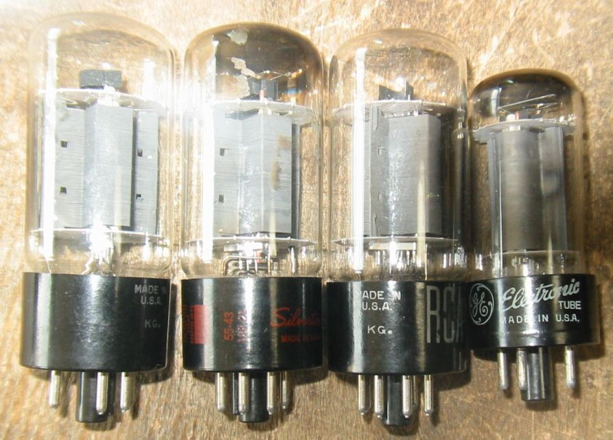
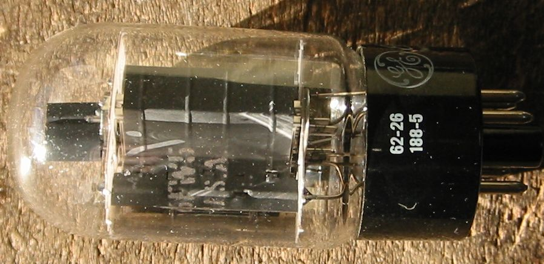
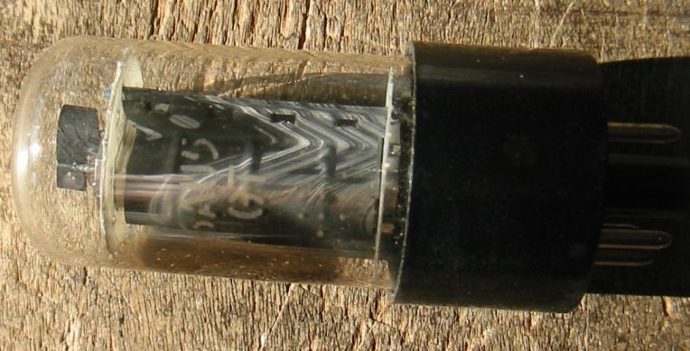
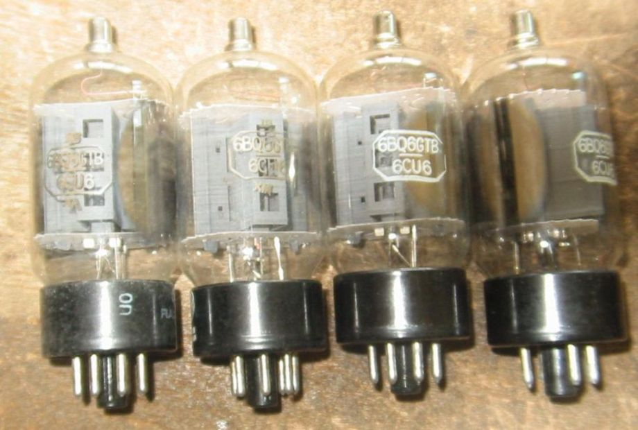
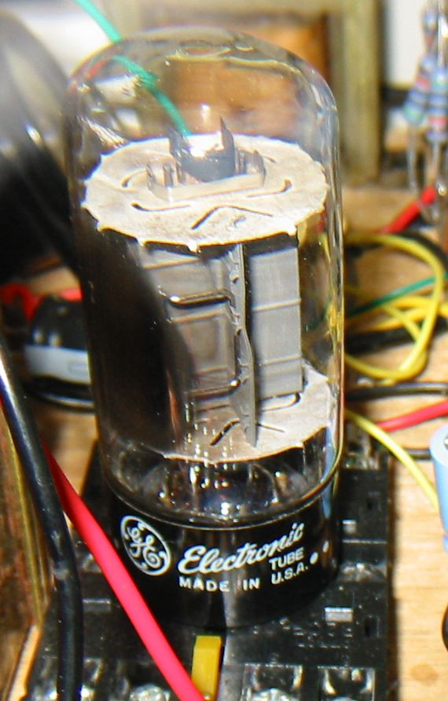
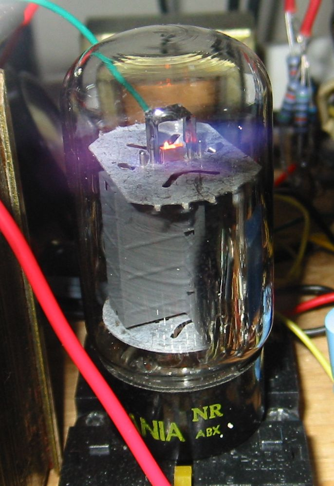
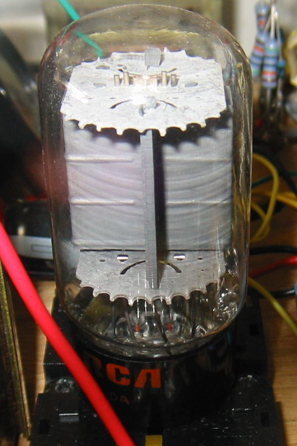
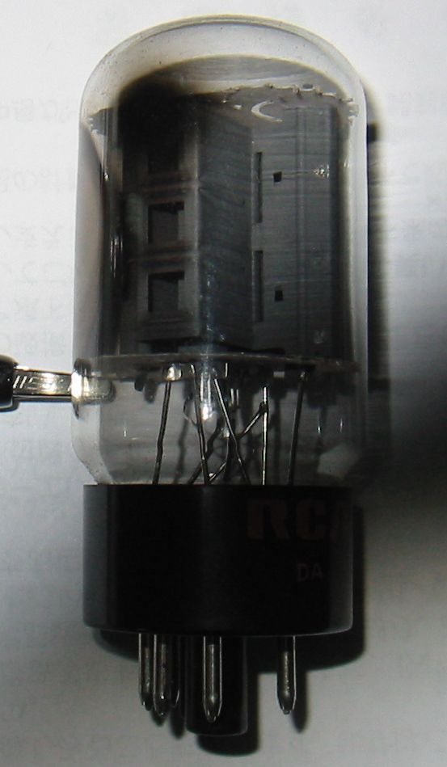
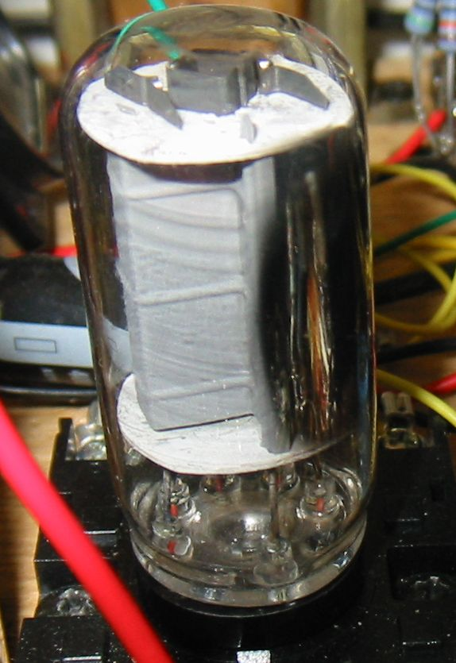
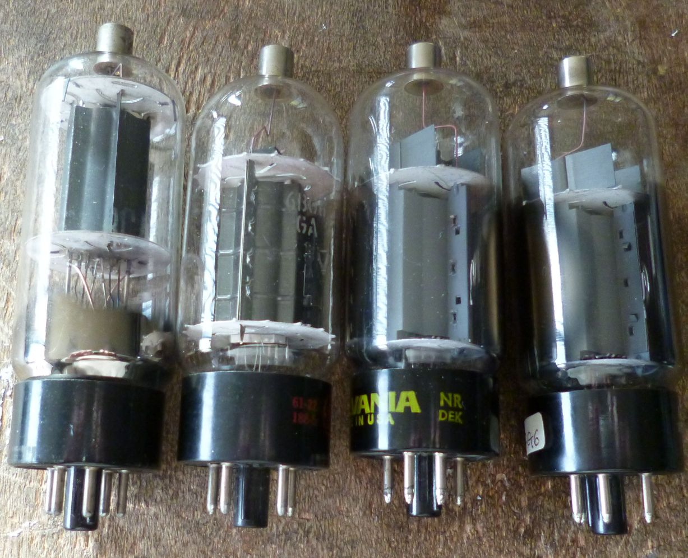

6BQ6をシングルエンドにした球が6AV5で、6BQ6GTBに対応するのが6AV5GAといわれています。それが6B4とどんな関係が？
この話は6AV5が2A3の6V管6B4の代替えになっているという噂から始まったようです。それはある大きな真空管メーカーが
政府との契約で、大量の6AV5を内部で3極管接続して6B4のラベルをつけて納入したというものです。
誰かがこれを実際に調べたとか、実験したということは知らなかったのですが、最近ストレートチューブの6B4Gが
インターネットで売られているのを見つけ、そんなこともあるのかと調べてみました。
アメリカのフォーラムをのぞいてみると、6AV5の最大スクリーングリッド電圧が175Vだからそれは難しいだろう意見が
多かったようです。しかしこの点については、規格を守ろうという意志の全くない私にとって、問題ではありません。
多くの場合3結にすると、スクリーングリッド電圧はもっと高くしても大丈夫です。ただし、スクリーングリッド損失電力を
実測して、決してオーバーしていないことを確認する必要はあります。ほかに否定的な意見はないようです。
実際に実験した方もおられ、400VまでOKといっています。プレート損失はどうかというと、2A3と同じ15Wは問題なし、
もっとオーバーパワーができるようです。
私の感じとしては、TV水平出力管の3結はかなりおもしろく、2A3よりもいいかもしれないと思っています。たとえば6BQ6の3結と
2A3を比較すると、3定数がほとんど同じで、問題はスクリーングリッドの電圧だけです。
2A3 Ep/Pp=300V/15W、 μ=4.2、gm=5250、rp=800Ω
6AV5GA Ep/Pp=550V/11W、 Esg/Psg=175V/2.5W、μ2=4.3、gm=5500、rp=782Ω
6BQ6 Ep/Pp=700V/11W、 Esg/Psg=175V/2.5W、μ2=4.3、gm=5500、rp=782Ω
RCA 6AV5GA, Silvertone(SEARS ROEBUCKのOEM メーカ不明) 6AV5GA, RCA 6AV5GA、右端一回り小さいのがGE 6AV5GT

GE 6FW5 この球は6DQ6をシングルエンドにしたもののようです。6AV5GAとそっくりです。

GE 6AU5GT 上の6AV5GTとそっくりです。

ダブルネームの球 6BQ6GTB/6CU6 NOS メーカ不明

私は残念ながらまだ6AV5GAを実際に動かしていないのですが、どうも全ての6AV5GAが400Vまで耐えられるのではなく、
メーカによる違い、同じメーカでも製造時期による違いがあるようです。一番いいのがSYLVANIA製でこれは400V/30WまでOKで、
ほかのメーカでは300V/15Wがせいぜいというのもあるようです。
まず実験をして確かめてから制作ということになりますね。それと、実験中の仮配線では、自己発振に気をつけてください。
2010/06/23
6AV5GAの3結での実験
機会があったので、6AV5GAを3結で試験してみました。下の写真はGE/NOSです。
Epk=350V、Ik=63mA、Ig=3.8mAです。Pp=20.75W、Psg=1.3Wになりますが、プレートが赤くなることもなく、もちろんSgが
焼けることもありません。

他にRCA/NOS、SYLVANI/NOSも試してみましたが、ほとんど同じで何も問題ありません。
SYLVANIA/NOSの6FW5も試してみましたが、これは6DQ6のシングルエンド版なので、より余裕があり全く問題なし。
おまけに6AU5GTメーカ不明をテストしましたが、Ik=55mA、Isg=3.8mAで平然として動作していました。
2012/05/24
下の写真はSYLVANI/NOS 6AV5GAです。
Epk=350V、Ik=62mA、Ig=3.6mAです。Pp=20.7W、Psg=1.3Wになりますが、この球もプレートが赤くなることもなく、
もちろんSgが焼けることもありません。

2012/05/26
下の写真はRCA/NOS 6AV5GAです。プレートの放熱翼の付け根に大きなスリットがあるので、熱設計が良くないという人もいますが
Epk=350V、Ik=60mA、Ig=3.6mA、Pp=19.7W、Psg=1.3Wでは、この球もプレートが赤くなることもなく、もちろんSgが焼ける
こともありません。

2012/05/27
下の写真はRCA/NOS 6AV5GA、プレートの放熱翼の付け根に大きなスリットがある球です。
なぜこんなところにスリットが付けられたのかわかりません。

2012/05/28
下の写真はメーカ不明6AU5GTです。
Epk=365V、Ik=56mA、Ig=3.7mA、Pp=19W、Psg=1.4Wでは、この球もプレートが赤くなることもなく、もちろんSgが焼ける
こともありません。特にオーバーパワーを推奨しているわけではありませんが、放熱のよい状態で、損失電力がきちんと
把握されていれば、自己責任で使う限り何も問題はないと思います。
この状態での管壁温度をサーミスタ温度計で測ってみましたが、最高温度の部分で131℃でした。
また、部屋を暗くしてみると、プレートの放熱翼の付け根の部分がかすかに赤くなっていました。

2012/05/28
Philips/ECG (formerly Sylvania) 6BG6GA tubes that are PERFECT replacements for any 6L6 or 7027A.
ギターアンプ用の真空管として6L6の代替えに使えるという話がアメリカの方にあります。
トッププレートを処理するアダプタも売られており、実際にアンプにインストールして動かしている方もたくさん
おられます。
元々この球は807から作られたので、初期のものは807とそっくりです。その807の元となった6L6はメタル管で、それが
ガラス管になったものが6L6G、それが時代とともに進化して6L6GA、6L6GB、6L6GCとなった。そして6L6GCの時代に作られた
6BG6GAは、6L6GCの材料を流用して作られたので、30Wのプレート許容損失があるというストーリーになります。
このようなことは長期にわたって作られた球では良くあるのではないかと思います。たとえば同じTV水平出力管の6BQ6は
6BQ6GT、6BQ6GTA,6BQ6GTB、6BQ6GAなど様々な名前や形のものが作られましたが、そのプレート許容損失は一貫して11Wでした。
自分の目で見る限り、全く同じではなく、規格以上の実力を持った球があったのではないかと思います。

6BG6GA、左からRCA、GE、SYLVANIA、GEのブランドです。
左から3番目のグレーのプレートのSYLVANIAがここで話題になっているものではないかと思います。
6L6GCでよく見かける色と形をしています。
ところが一番右のGEはブランドがGEで中身はまったくSYLVANIAと同じです。
2013/01/07
back to top
back to home page